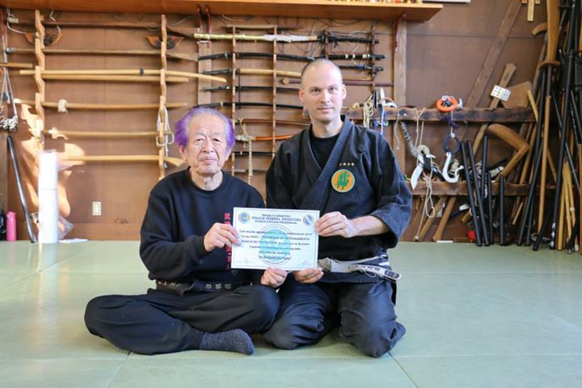
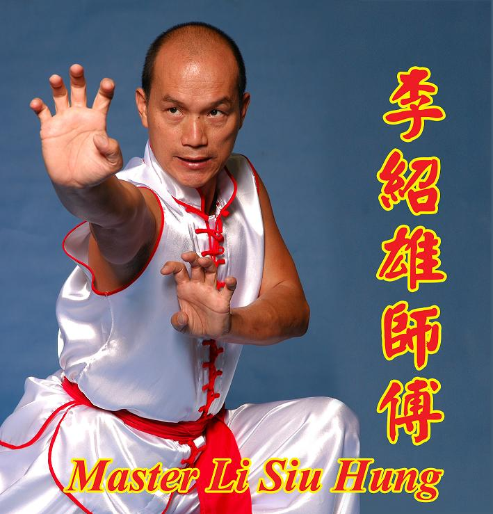
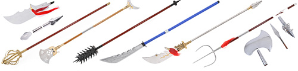

Nuestras disciplinas tienen lugar en la sede principal de Wudang Martial Arts Studios que es la sede principal de esta empresa en la que se continua
con los valores y reglamentos principales y regidores de las artes marciales que se declararon por los fundadores de la Bujinkan y el honbu dojo en Japón.
El honbu dōjō (dojo principal) de la Bujinkan está en las afueras de Noda, en la prefectura de Chiba, en Japón.
Es un arte marcial de origen Japonés, su fundamento principal es la efectividad en la defensa personal y la supervivencia. Entre las características basicas estan las de aprender a utilizar el cuerpo como un arma y a ser cada vez mas analiticos y exactos en los movimientos, su efectividad en la defensa ha hecho historia ya que su esencia reside en la SUPERVIVENCIA y LA EVASIÓN de ataques.
Fue fundada por el maestro Masaaki Hatsumi (初見良昭 Hatsumi Masaaki), que fue estudiante de Toshitsugu Takamatsu (高松寿嗣 Takamatsu Toshitsugu)
CONOCE SOBRE NUESTRAS DISCIPLINAS
Ten no Tsurugi Ryu Battojutsu (arte del manejo de la katana o espada japonesa) Enseñanza del desenvaine y manejo del sable japonés, Battojutsu (arte de desenvainar el sable). Filosofia y Cultura Japonesa.

Es el arte marcial de origen chino, es anterior a la aparicion del Karate y el TAE KWON DO. Sus origenes se pierden en los siglos. El Kung Fu es un sistema de defensa personal mas que un sistema deportivo, sus movimientos armonicos y efectivos simulan los realizados por animales como el Tigre, La grulla, La mantis, etc.. Que en la lucha o defensa natural realizan frente a un depredador.
Nuestro Director Técnico y aval de la calidad y pureza de la enseñanza que impartimos es el Grand Master Li Siu Hung quien es el heredero de la sexta generación del creador de éste sistema, el memorable Master Chang Heung
 
Este link te llevará a una encuesta para conocer tu camino en las artes marciales, valdrá la pena que te pases para responderla.
TU CAMINO EN LAS ARTES MARCIALES
El método de la Bujinkan se llama Bujinkan Budō Taijutsu (武神館武道体術) y es una colección de nueve linajes marciales antiguos, conocidos como ryūha. Anteriormente se llamó Bujinkan Ninpō Taijutsu, pero es conocido también con el nombre genérico de Ninjutsu (técnicas y tácticas utilizadas por los Ninja). Tres de las nueve escuelas que componen la Bujinkan son de Ninjutsu. Las otras seis son de Bujutsu ("arte de guerra") que comprenden artes marciales tradicionales de Japón, practicadas antiguamente por los Samurái.
Bujinkan es una escuela tradicional de Budō, y que, siendo un arte Zen hace un estudio en conceptos propios del mismo, tal como el de fudōshin ("corazón inmutable").
Las artes marciales enseñan valores y principios que son de mucho valor para la vida diaria, tales como el respeto, la disciplina, la perseverancia, la humildad y la empatía. Estos principios no solo se aplican en el entrenamiento. Son los que hacen de los artistas marciales mejores personas para la sociedad.